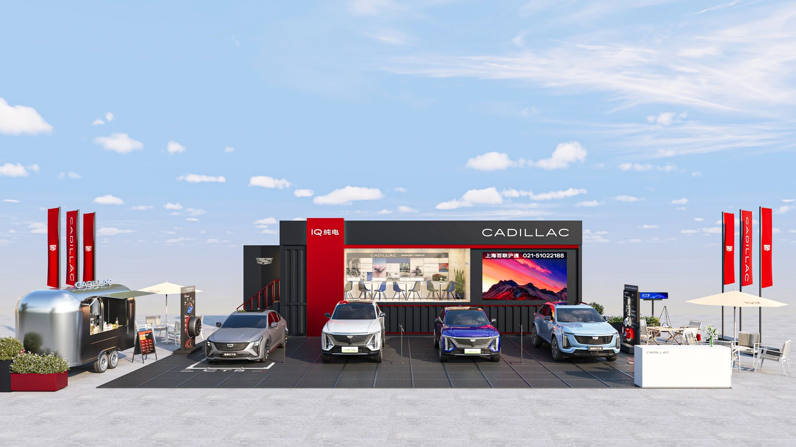
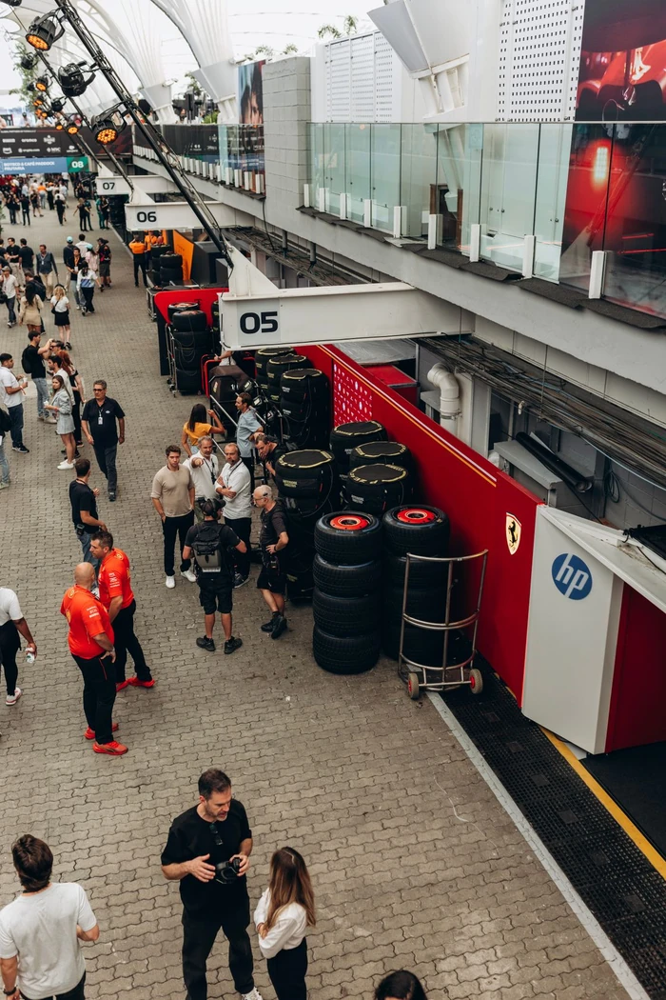
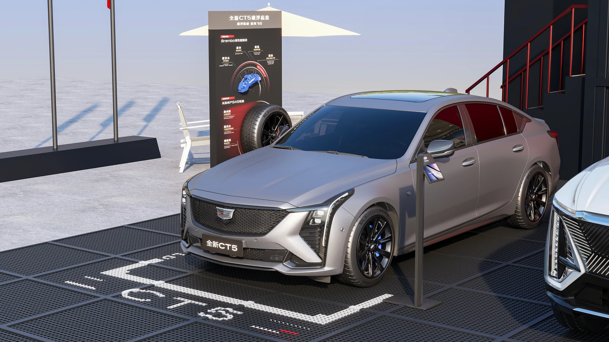
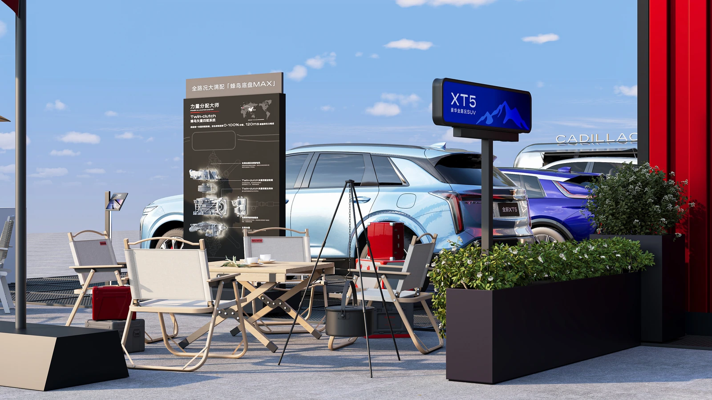

凯迪拉克风范巡展室外版
巡展主视觉方案渲染
把四台展车排在共同的深色地台上，以横向巡展主体作为背景。车阵两侧留给银色拖车和室外座席，透过玻璃可见室内洽谈区。
从广场正面看巡展
开敞地面接到完整车阵，深色地台与室外地面分界清楚。左侧银色拖车和两边的旗帜从远处标出边缘，白伞和座席落在车阵外侧。

室外展区正面方案渲染
从主立面走近展车
深色横梁把玻璃展示面与大屏收在同一立面，红色竖板和栏杆标出侧边台阶。走到车旁，可以看到车型标记、展牌与车位的相对位置。

主立面与外侧台阶方案渲染

F1 维修区实拍里，红色隔板紧挨深色车库开口和成组黑色轮胎，分区一眼可见。巡展立面也用红色竖板标出入口一侧，再以细红线接向深灰横梁下的玻璃展面。
Jonathan Borba · Pexels 许可

CT5 展位近景方案渲染

XT5 展位近景方案渲染
从室外座席到室内洽谈
室外的折椅和低桌靠近展车，窄花箱收住座席一侧。进入玻璃围合的空间后，圆桌顺着图文墙排列，两端视角分别看见室外场地和品牌墙。
室外座席一侧方案渲染

展车旁的室外座席方案渲染


完整图集
9 张 · 点图放大